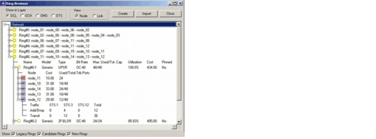

Ring Design > Evaluating Results > Viewing Ring Details in the Ring Browser
Viewing Ring Details in the Ring Browser
In the Ring Browser you can inspect the amount and type of rings that are installed at each ring location using the Ring Browser (Network > Ring Browser). For each ring, you can inspect the used and total capacity, utilization and cost. You can switch between the Link and Node views to inspect the capacity on each link and node. You can use the Show checkboxes at the bottom to show or hide rings by usage type (Legacy, Candidate, and New). For more information, see Table 4-15-Ring Browser: Treeview.
Figure 12-15 Sizing Results in the Ring Browser

| Home © 1987-2007 OPNET Technologies, Inc. All Rights Reserved. This software may be covered by one or more U.S. Patents. See complete patent notice in the Legal Notices section. OPNET Support Center |